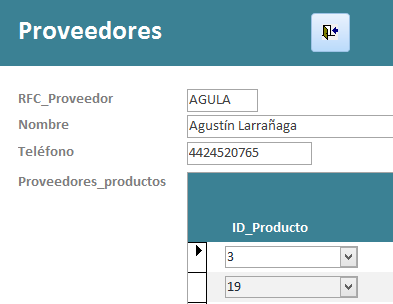
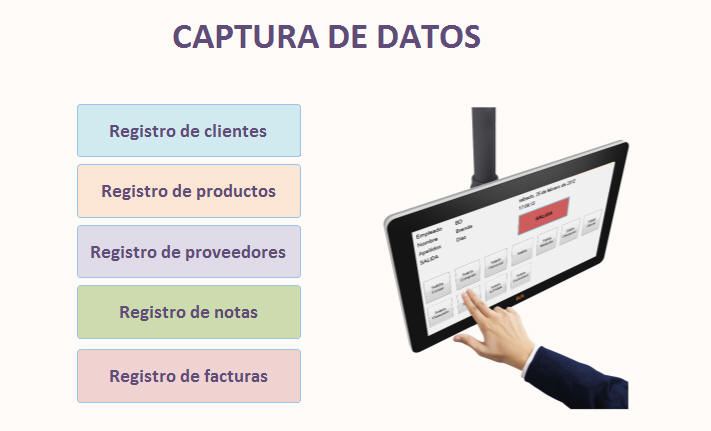
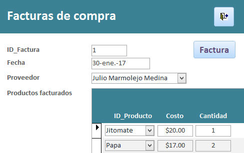

|
1. Creación de macros para abrir formularios e informes
1. Crea las macros para abrir los siguientes formularios, con
la ventana maximizada, y guarda cada macro con el nombre
correspondiente:
|
Formulario
|
Nombre de la macro
|
| Clientes |
Abrir
clientes |
| Productos |
Abrir
productos |
|
Proveedores |
Abrir
proveedores |
| Notas de
venta |
Abrir
notas |
| Facturas
de compra |
Abrir
facturas |
2. Crea las
macros para abrir los siguientes informes, con la ventana maximizada,
y guarda cada macro con el nombre correspondiente:
|
Informe
|
Nombre de la macro
|
| Clientes
por ciudad |
Abrir
informe clientes |
| Productos por clasificación |
Abrir informe productos |
| Notas de
venta |
Abrir
informe notas |
|
Facturación |
Abrir
informe facturas |
| Total de
ventas por producto |
Abrir
informe ventas |
2. Creación de macro para salir de la base de datos
- Crea una macro para
salir de la base de datos (QuitAccess) y dale el nombre de
Salir de la base de datos.
3.
Creación de los botones para cerrar formularios
1. Crea los
botones para cerrar los siguientes formularios: Clientes, Productos,
Proveedores, Notas de venta y Facturas de compra.
2. Asigna al botón
de Salir
a cada formulario.
- Formulario
Proveedores

- Formulario Notas de venta
- Formulario
Facturas de compra
.
.
EJEMPLO DE CÓMO INSERTAR UN BOTÓN
EN EL FORMULARIO DE CLIENTES
1. Abre el
formulario de Clientes en Vista Diseño.
2. En la
sección de Detalle o en Encabezado del formulario, inserta un
"botón de comando" con la imagen de "Salida".
Al insertar el botón, selecciona en la opción de
Categoría > Operaciones con formularios
y en la opción de Acciones > Cerrar formulario.
Da clic en el botón
de Siguiente y selecciona la Imagen de "Salida".
Finalmente da clic en
el botón de Finalizar y listo.
|
4.
Creación del menú de CAPTURA DE DATOS
- Crea un nuevo
formulario en Vista Diseño. Guarda el formulario
con el nombre MENU DE CAPTURA
- Inserta una
Etiqueta
con el texto CAPTURA DE DATOS. Modifica el tamaño, color
y tipo de letra al que más te agrade.
- Cambia el fondo del
formulario a blanco o el color que te agrade.
- Inserta la imagen de
captura.png y acomódala en el lugar que más te agrade dentro del
formulario
- Asigna a cada botón
la macro correspondiente:
- Inserta cinco
botones. Modifica el tamaño, color y tipo de letra de los botones de
manera que se vean bien con el resto del formulario.
- Asigna a cada botón
la macro correspondiente:
|
Texto del botón
|
Macro a asignar
(Al hacer clic...)
|
| Registro
de clientes |
Abrir
clientes |
| Registro
de productos |
Abrir
productos |
| Registro
de proveedores |
Abrir
proveedores |
| Registro
de notas |
Abrir
notas |
| Registro
de facturas |
Abrir
facturas |

5. Creación del menú de INFORMES
- Crea un nuevo
formulario en Vista Diseño. Guarda el formulario
con el nombre MENU DE INFORMES
- Inserta una
Etiqueta
con el texto de INFORMES. Modifica el tamaño, color y
tipo de letra al que más te agrade.
- Cambia el fondo del
formulario a blanco o el color que te agrade.
- Inserta la imagen de
informe.jpg y acomódala en el lugar que más te agrade dentro del
formulario
- Inserta tres botones.
Modifica el tamaño, color y tipo de letra de los botones de manera que
se vean bien con el resto del formulario.
- Asigna a cada botón
la macro correspondiente:
| Texto del botón
|
Macro a asignar (Al hacer clic...)
|
| Clientes por ciudad |
Abrir informe clientes |
| Productos |
Abrir informe productos |
| Notas de venta |
Abrir informe notas |
| Facturación |
Abrir informe facturas |
| Total de ventas |
Abrir informe ventas |
6. Creación de los botones para cerrar formularios de Menus
1. Crea los
botones de Salir
a los formularios: MENU DE CAPTURA y MENU DE INFORMES.
.
7. Creación de macros para ABRIR formularios de MENUS
- Crea las macros para abrir los siguientes formularios, con la
ventana maximizada y con modo de datos de
Sólo lectura (Ya que no queremos que el usuario modifique los
menús), y guarda cada macro con el nombre correspondiente:
|
Formulario
|
Nombre de la macro
|
|
MENU DE CAPTURA
|
Abrir captura
|
|
MENU DE
INFORMES
|
Abrir informes
|
8. Creación del menú principal
- Crea un nuevo
formulario en Vista Diseño. Guarda el formulario
con el nombre MENU PRINCIPAL
- Inserta una
Etiqueta
con el texto Frutería y verdulería "La Huerta". Modifica
el tamaño, color y tipo de letra al que más te agrade.
- Cambia el fondo del
formulario a blanco o el color que te agrade.
- Inserta la imagen de
menu.jpg y acomódala en el lugar que más te agrade dentro del
formulario
- Inserta dos botones.
Modifica el tamaño, color y tipo de letra de los botones de manera que
se vean bien con el resto del formulario.
- Asigna a cada botón
la macro correspondiente:
|
Texto del botón
|
Macro a asignar
(Al hacer clic...)
|
|
Captura de
datos
|
Abrir captura
|
|
Informes
|
Abrir informes
|
9. Creación del botón para SALIR DE LA BASE DE DATOS
- En la parte inferior
derecha del formulario, inserta un botón con la imagen de Salir
y asígnale la macro Salir de la base de datos
10. Consulta que pida el valor del número de nota
1. Abre la Consulta de notas, dando doble clic sobre
esta.
2. Abre la Consulta de
notas en vista diseño Ver > Vista diseño
3. stablece el criterio
Como adecuado para el campo ID_Nota, de manera que pida el
valor del ID_Nota
11. Consulta que pida el
valor del número de factura
1. Abre la Consulta de facturas, dando
doble clic sobre esta.
2. Abre la Consulta de facturas en vista diseño Ver >
Vista diseño
3. Establece el criterio Como adecuado para el campo
ID_Factura, de manera que pida el valor del ID_Factura
12. Creación de macro y botón en el
formulario de "Notas de venta"
1. Abre el
formulario de Notas de venta, dando doble clic sobre este.
2. Abre el
formulario de Notas de venta en vista diseño Ver > Vista
diseño
3. Crea un botón
cuyo nombre deberá ser Nota.
4. Asigna al botón
la macro: Abrir informe notas.
5. Guarda tu
formulario y listo prueba tu botón!!.
13. Creación de macro y botón en el formulario de
"Facturas de compra"
1. Abre el formulario
de Facturas de compra, dando doble clic sobre este
2. Abre el formulario de
Facturas de compra en vista diseño Ver > Vista diseño
3. Crea un botón cuyo
nombre deberá ser Factura.
4. Asigna al botón la
macro: Abrir informe facturas.
5. Guarda tu formulario y
listo prueba tu botón!!.

15.
Creación del menú ejecutable
- Crea una macro llamada
AUTOEXEC que al abrir la base de datos se ejecute automáticamente
el formulario del MENÚ PRINCIPAL.
NOTA IMPORTANTE:
Revise las páginas 80, 81 y 82 del manual Capítulo 7. Macros,
ahí encontrará las instrucciones para realizar la macro de AUTOEXEC.
16. Reducción del tamaño de la base de datos
- Selecciona del menú
Herramientas de base de datos > Compactar y reparar base de datos.
- Listo, habrás reducido
el tamaño de tu base de datos.
|


{kind=link}
{kind=link}
{kind=link}